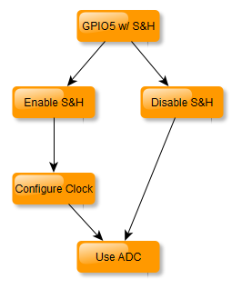

Overview
The ADC driver allows to configure the peripheral and retrieve samples in blocking mode (waiting on sample) or in a asynchronous way using interrupt with callback function.
The ADC has 4 source of measurement with different features.
Input source
VBAT1
VCC
GPIO5 with Sample & Hold
GPIO5 without Sample & Hold
Input range
- VBAT1 input source
1.8 V to 3.6 V
- VCC input source
0.95 V to 1.9 V
- GPIO5 input source with sample & hold feature
0.05 V to 0.5 V
0.05 V to 1 V
0.05 V to 2 V
- GPIO5 input source without sample & hold feature
0.95 V to 1.9 V if Vhi is disabled
1.8 V to 3.6 V if Vhi is enabled
When a source without Sample & Hold is selected, the sampling rate can be configured from 88’888 Hz to 120’000 Hz.
When the source from GPIO5 with Sample & Hold is selected, the sampling rate can be configured from 60’000 Hz to 85714 Hz.
The ADC driver implements a feature to recover configuration after wakeup.
ADC Configuration
If VBAT1 input is selected, clock config shall be done to select the sampling frequency of the ADC. The ADC can be also configured as 8 bits / 9 bits resolution. By default the ADC has a 9 bits resolution.
Example with 120 kHz sampling frequency and 9 bits resolution.
// Set Source from VBAT1
ADC_SetSourceSelection(ADC_SOURCE_VBAT1);
// Set Clock of ADC to 120 kHz
ADC_SetClockConfig(ADC_CLK_120000_HZ);
// Set ADC resolution of 9 bits
ADC_SetResolution(ADC_9_BITS);
If VCC input is selected, clock config shall be done to select the sampling frequency of the ADC. The ADC can be also configured as 8 or 9 bits resolution.
Example with 120 kHz sampling frequency and 9 bits resolution.
// Set Source from VCC
ADC_SetSourceSelection(ADC_SOURCE_VCC);
// Set Clock of ADC to 120 kHz
ADC_SetClockConfig(ADC_CLK_120000_HZ);
// Set ADC resolution of 9 bits
ADC_SetResolution(ADC_9_BITS);
If GPIO5 with Sample & Hold feature is selected as input source, the configuration given in the code snippet below shall be done. With this input source, the Sample & Hold feature can be enabled or disabled. In case of S&H disabled, there is no need to configure the Sample & Hold clock config.
Example with Sample & Hold feature enabled at 60 kHz of sampling frequency, range from 0.05 V to 0.5V and 9 bits of resolution.
// Set Source from GPIO5 with Sample & Hold
ADC_SetSourceSelection(ADC_SOURCE_GPIO5_WITH_SH);
// Set Range from 0.05 V to 0.5 V
ADC_SetRange(ADC_RANGE_0_05V_TO_0_5V);
// Enable Sample & Hold
ADC_EnableSampleAndHold();
// Set Sample & Hold clock config
ADC_SetSHClockConfig(ADC_SH_CLOCK_60000_HZ);
// Set ADC resolution of 9 bits
ADC_SetResolution(ADC_9_BITS);
If GPIO5 wihtout Sample & Hold feature is selected as input source, the following configuration should be done.
Example with sampling frequency at 120 kHz and Vhi enabled with a range of 1.8 V to 3.6 V
// Set Source from GPIO5 without Sample & Hold
ADC_SetSourceSelection(ADC_SOURCE_GPIO5_WITHOUT_SH);
// Set Clock of ADC to 120 kHz
ADC_SetClockConfig(ADC_CLK_120000_HZ);
// Enable Vhi for range from 1.8 V to 3.6 V instead
// of range from 0.95 V to 1.9 V
ADC_EnableVhi();
// Set ADC resolution of 9 bits
ADC_SetResolution(ADC_9_BITS);
Enabling ADC
The ADC shall be first configured and then enabled prior use.
// ADC Configuration
...
// Enable ADC peripheral
ADC_Enable();
Warning
The hardware of ADC need 50 us to be operational after enable. The ADC_Enable() and ADC_Resume() functions include a wait of 50 us to ensure proper usage.
There is no need to register the module because it doesn’t need any memory allocation by the system.
ADC initialization and Sleep mode
The ADC shall be initialized at power and resumed (reconfigured) after wakeup. This shall be done at the time the application checks if it resumes from sleep mode.
NO_RETURN void NVM_ApplicationEntry(void)
{
// Initialize the board support package.
BSP_Init();
// Enable interrupts (threshold set during IRQ module initialization).
IRQ_EnableInterrupts();
// Check if it is wake-up from sleep.
if (PML_DidBootFromSleep())
{
// Resume ADC
ADC_Resume();
// Resume QPC
(void)QF_resume();
}
else
{
// Init ADC
ADC_Init();
}
}
ADC Conversion with blocking function
The StartBlocking() API start an ADC conversion and wait for the result. It also check errors on ADC conversion. In this case the API returns false if the operation fails.
/**
* @brief Start conversion for ADC.
* @note This function start the conversion and wait for the result (blocking).
* @retval true in case of sucessful operation
* @retval false in case of timeout on conversion running
*/
bool ADC_StartBlocking(void);
The function does not return back any sample value. Consequently, the function below should be called to obtain the ADC raw value.
/**
* @brief Get ADC measurement
*
* @param result uint16_t value with 8 or 9 bits resolution
* @retval true in case of data valid
* @retval false in case of overrun
*/
bool ADC_GetValue(uint16_t* result);
In case of overrun on the ADC, the function return false. Overrun means that a previous ADC conversion was done and not read before the new conversion has been started.
ADC Conversion with asynchronous function
First in order to use ISR mechanism for ADC conversion, a callback shall be registered to the driver.
/**
* @brief Set ISR callback when the user want to use
* conversion with interrupt
*
* @param callbackFunction callback function for interrupt
*/
void ADC_RegisterCallback(Driver_Callback_t callbackFunction);
The prototype of the callback shall be
static void ADC_ISR_Callback(Driver_Status_t status, void* pUserData)
{
}
Note : When using QPC, a signal shall be posted to the task to read the ADC value.
Then a conversion can be started by calling the following function. It returns immediatly after having started the conversion.
ADC_StartWithCallback();
After the conversion delay of the ADC following the sampling frequency, the callback will be called.
As explained before, it is not recommended to read the ADC data from the callback which is called by the ISR. In the case of QPC, post a signal to the task and when the task receive the signal, the following code can be executed to read the ADC value.
uint16_t adc;
// Get data from ADC register
if (ADC_GetValue(&adc))
{
// Valid data
}
else
{
// Overrun error on ADC
}
ADC Convertion in Continuous mode using DMA
The ADC can be used in continuous mode, it means the ADC will sample the voltage at the sampling frequency. In order to offload the CPU, the DMA controller is used to transfer all the samples in the provided buffer. When the number of samples is acquired, the DMA controller generate an IRQ and the ADC library call the callback.
The first thing is to configure the ADC.
// Set Source from VBAT1
ADC_SetSourceSelection(ADC_SOURCE_VBAT1);
// Set Clock of ADC to 120 kHz
ADC_SetClockConfig(ADC_CLK_120000_HZ);
// Set ADC resolution of 9 bits
ADC_SetResolution(ADC_9_BITS);
// Enable ADC
ADC_Enable();
Then a callback shall be provided to the API. This callback will be called when the DMA raise the ISR when all samples have been transfered to the buffer.
static void DMA_ISR_Callback(Driver_Status_t status, void* pUserData)
{
// All samples from the ADC have been acquired and transfered to the buffer
}
// Register the callback for the end of DMA operation
ADC_RegisterCallback(DMA_ISR_Callback);
At this time, the ADC in continuous mode can be used. A memory buffer for the DMA shall be declared.
// For 9 bits ADC, the buffer shall be 16 bits size
static uint16_t buffer[BUFFER_SIZE] __attribute__((aligned(4)));
// For 8 Bits ADC, the buffer shall be 8 bits size
static uint8_t buffer[BUFFER_SIZE] __attribute__((aligned(4)));
Then the ADC can be started in continuous mode. The buffer shall be provided to the API and the number of samples to acquire (same as buffer size). A free DMA channel shall be also provided for the DMA transfer.
// Start the ADC in continuous mode, the function is asynchronous
ADC_StartContinuousWithCallback(buffer, BUFFER_SIZE, 3);
ADC Calibration
The ADC can be factory calibrated or by the customer.
The calibration data is stored in either the EM Info Page or the User Info Page. The User Info Page takes precedence over the EM Info Page.
During system power-on, the ADC driver verifies the calibration data CRC for each input source. This verification occurs when the ADC_Init() function is called and is only performed once at power-on because it is time-consuming and the calibration data remains unchanged.
If no calibration data is available or if it is corrupted (with a bad CRC), the driver will still continue working but without any calibration applied.
ADC Driver thread safety
Warning
The ADC API is not thread safe, it means that it is not recommended to access the ADC from multiple task. If it’s absolutly needed, the access to the driver shall be protected at application level.